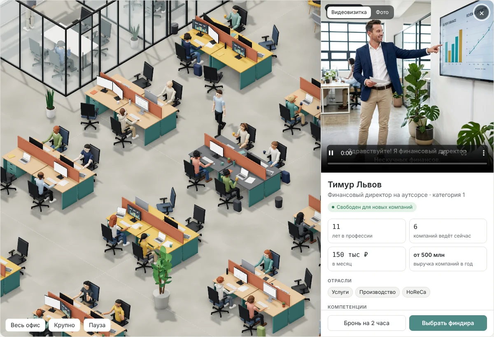
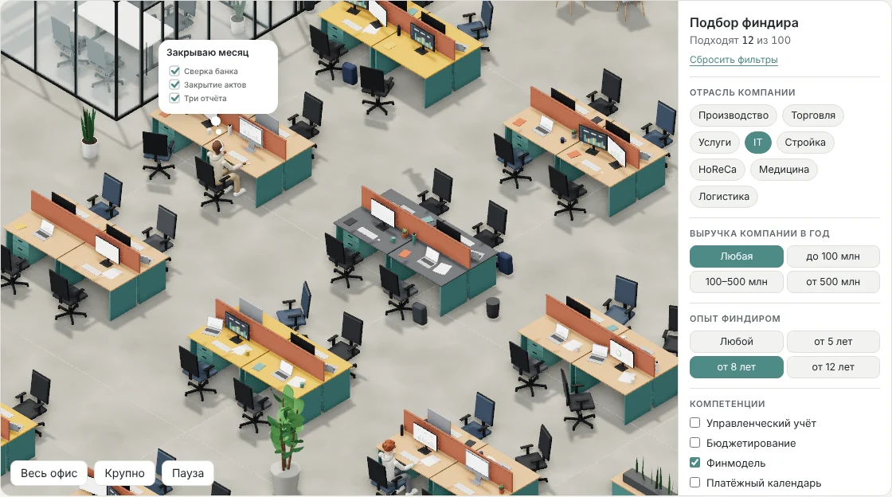

Офис финдиректоров: тот же подбор, но как живой офис
Я взял задачу, которую уже решал обычным интерфейсом, — подбор финансового директора под запрос клиента — и собрал её заново как 3D-офис на 100 человек. Цель — проверить, насколько далеко можно уйти от привычной формы, не теряя сам сценарий.
Вместо списка карточек — офис сверху: рабочие места, переговорные, кухня и зона отдыха. Каждый человек в офисе — финдир. Счётчики сверху показывают, сколько из них подходят под запрос и чем они сейчас заняты: работают за столом, сидят на встрече или пьют кофе.
Живой прототип. Справа панель подбора: отрасль, выручка компании, опыт, компетенции, стоимость, «только свободные» и «с видеовизиткой». Левая кнопка мыши двигает сцену, правая поворачивает, колесо приближает. Клик по человеку открывает профиль. Открыть на весь экран ↗
Сценарий
Фильтр не прячет строки, а пустеет офис
Кнопки «Применить» нет: условия срабатывают сразу. Те, кто не подходит, по одному исчезают, и в офисе остаются только подходящие. Так сужение выборки видно физически, а не только по цифре.

Профиль по клику на человека. Видеовизитка или фото, статус «Свободен для новых компаний», опыт, сколько компаний ведёт сейчас, стоимость, выручка компаний, отрасли, компетенции и кейсы. Внизу — бронь на 2 часа и «Выбрать финдира».
Клик по человеку открывает профиль, собранный по той же структуре, что в рабочем продукте из кейса «Подбор финансового директора»: опыт, отрасли, компетенции, кейсы, видеовизитка, бронь на 2 часа и кнопка «Выбрать финдира». Логика подбора та же, меняется только способ на неё смотреть.

Крупный план. На мониторах живые мини-дашборды, над людьми иногда появляются облачка с тем, чем они заняты, например «Закрываю месяц»: сверка банка, закрытие актов, три отчёта.
Как сделано
Один HTML-файл и ИИ как напарник по коду
Прототип собран вместе с Claude в одном HTML-файле на three.js, без сборки и сервера. Я задавал сценарий, состав офиса, поведение людей и правила фильтров, а код и 3D-геометрию собирали итерациями в диалоге.
Сцена
Офис генерируется по фиксированному зерну: при каждой загрузке он одинаковый.
Все люди — одна анимированная модель, у каждого семь «костей»: корпус, спина, голова, плечи и локти.
Люди печатают очередями, оглядываются, примерно раз в 9 секунд пьют из кружки, ходят по проходам.
Интерфейс
Фильтры и профиль — обычный HTML поверх сцены, с подписями для скринридеров и состояниями кнопок.
Светлая и тёмная тема по настройке системы.
Учтена системная настройка «уменьшить движение».
Зачем это может пригодиться
Где такой формат может работать
Это эксперимент, а не решение, проверенное на пользователях. Ниже — гипотезы, где пространственный интерфейс может дать то, чего не даёт список.
1. Лендинг и продажиКлиенту сложно представить, что за сервисом стоит сеть из сотен специалистов. Офис, в котором люди работают, показывает масштаб и «живость» сети быстрее, чем цифра в заголовке.
2. Карта загрузки для внутренних ролейРаспределителю и куратору важно видеть, кто свободен, кто на встрече, кто в отпуске. Пространственная карта может дополнить таблицу там, где нужно окинуть взглядом всю сеть сразу.
3. Найм и сообществоДля раздела вакансий офис показывает среду, в которую приходит новый финдир, — команды, встречи, общие пространства.
4. Разговор со стейкхолдерамиЖивой прототип нестандартной идеи за короткое время помогает обсуждать направление на примере, а не на словах, и дёшево отбросить его, если не взлетит.
5. Развитие навыков3D и моушн в вебе — то, что я сейчас прокачиваю. Эксперимент на знакомой задаче позволяет учиться, не отвлекаясь на новый домен.
Ограничения. 3D-сцена тяжелее обычной страницы и требует от устройства больше. Сама сцена недоступна для скринридера: подбор целиком выполняется через фильтры и профиль, они сделаны обычным HTML. Для рабочего инструмента формат стоит проверять на пользователях.
Что здесь моё. Идея перенести подбор в пространство, сценарий, состав офиса и поведение людей, правила фильтров и профиля из рабочего кейса. Код и 3D собраны вместе с Claude.